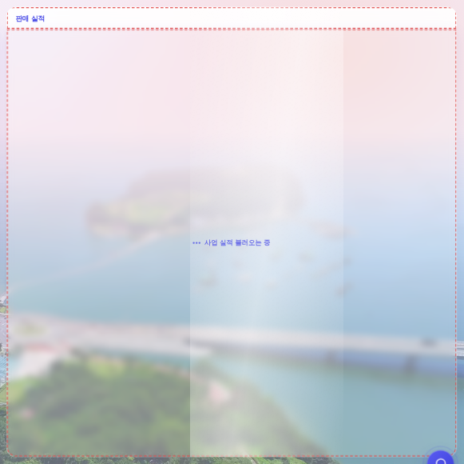
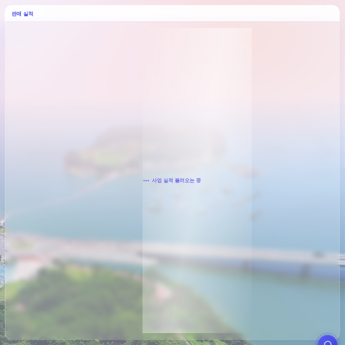
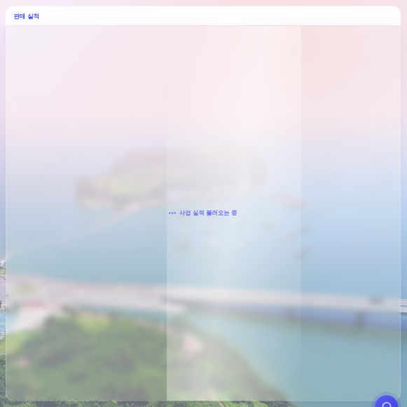

운영자 지시 260806-12 「이 빗살 로딩되면서 빗살 뜨는거, 창 전체에 뜨게해줄래? 창이라 하면 저 블러 된 독립 박스를 말하는 거임.
지금은 블러 박스 위에 흰색 박스에 국한되서 걸리는 거 같아서, 블러 박스 전면이 빗살 범위에 들어와 있으면 좋겠음」 ·
화면 = 결정적 목데이터(tools/qa_mock_ops.mjs) ?qa=admin · 실API·실데이터·PII 미접촉 · 1920×1080 · 스윕은 전/후 같은 위상(translateX(120%))으로 정지시켜 잡았다.
스윕(.sk-sweep)이 유리박스의 패딩 안쪽 로더 칸에 들어 있었다. 그래서 박스 테두리 18px 띠와 머리줄은 어떤 순간에도 안 쓸렸다.
| 칸 | 전 — 스윕이 지나가는 범위 | 후 |
|---|---|---|
| 머리줄(「판매 실적」) | 범위 밖 — 늘 정지 | 범위 안(.sk-sweep-hd) |
| 유리박스 패딩 18px | 범위 밖 — 사방 18px 띠가 남았다 | 범위 안(.sk-sweep-gl = 박스 직속) |
| 유리박스 내용칸 | 범위 안 | 범위 안 |
backdrop-filter를 갖는다.
backdrop-filter가 걸린 요소는 그 자체가 절대배치 기준(containing block)이 되므로, 그 안에 넣은 오버레이는 그 칸을 절대 벗어나지 못한다.
→ 같은 .sk-sweep을 두 칸에 한 벌씩 같은 프레임에 넣는다. 폭·주기·커브가 같으니 위상이 같고, 눈에는 띠 하나가 카드 전체를 쓸고 지나간다.
클립은 각 칸이 진다 — 머리줄은 자기 overflow:hidden+위 라운드, 유리박스는 스윕 자신의 아래 라운드.같은 화면·같은 위상. 파선은 실측용 표시일 뿐 앱에는 없다.

파선 없이 본 실제 화면(같은 순간):


카드(머리줄+유리박스) = x 960 · y 74 · 940×938. 아래는 그 안에서 스윕 컨테이너가 차지한 사각.
| 스윕 사각 | 왼쪽 여백 | 위 여백 | 오른쪽 | 아래 | 카드 면적 대비 | |
|---|---|---|---|---|---|---|
| 전 | 979, 139 · 902×854 | 19 | 65 | 19 | 19 | 87.4% |
| 후 | 961, 75 · 938×45 (머리줄) 961, 121 · 938×890 (유리박스) | 1 | 1 | 1 | 1 | 99.6% |
실제 CSS 계승본(스윕 1.5s ease-in-out · 34% 폭 · 100deg 그라데이션). 배경은 실물 사진 대신 근사 그라데이션(각주 참조).
전 — 박스 안쪽 내용칸만
후 — 카드 한 장 전면
| 자리 | 문구 | 도착하면 스윕이 어떻게 걷히나 |
|---|---|---|
| 2면 / 우 열 판매 실적 | 사업 실적 불러오는 중 | _railYrmSync → 프레임 재구축(_bizmSwap) = 머리줄·박스 안이 통째로 갈리며 자동 소거 |
| 3면 사업 결과 비교 | 운영 데이터 불러오는 중 | 같음(_bizmSwap) |
| 4면 고객 분석 | 회원 데이터 불러오는 중 | 이 면만 프레임을 안 다시 그린다(_memOvRender가 박스 안쪽만 교체) → _ldSweepOff()로 손으로 걷는다(정상·실패·세션 소거 3경로 전부) |
_ldGlass(문구, id, 최소높이) + _bizmHead(…, ld) 4번째 인자. 세 자리가 같은 조립을 쓴다(인라인 재타이핑 0).:root 0 — 추가된 CSS는 .sk-sweep-hd{z-index:-1}과 .sk-sweep-gl{border-radius:0 0 var(--radius-lg) var(--radius-lg)} 두 줄뿐(라운드는 기존 토큰)._BIZM_BOX에 position:relative 한 속성 추가 = 스윕의 절대배치 기준 못박기(실동작 무변 · 규칙 미준수 브라우저에서 스윕이 점줄 바까지 번지는 것 차단).z-index:-1 = 제 칸 배경 위·제목 글자 아래 → 정지한 제목 「판매 실적」이 스켈레톤처럼 번쩍이지 않는다.translateX(120%)에서 정지시킨 한 컷이다 — 실제로는 1.5s 주기로 계속 지나간다(§4가 그 모션).